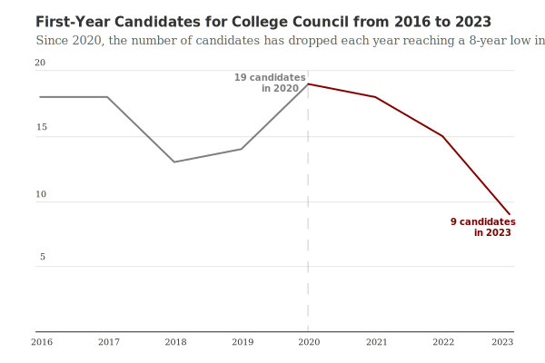
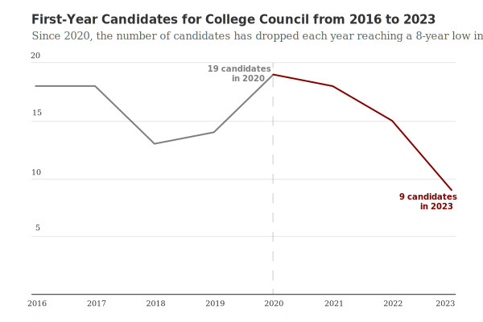

This spring I attended NICAR for the first time, a wonderful conference full of data journalist nerds. As someone new to the journalism world, I am constainlty looking to better understand the industry and what skills / tools are being used across the industry. One very common workflow I have observed to make graphics is to use a no/low code platform like Datawrapper or Flourish to make a chart, download as an SVG, upload into Adobe Illustrator, make edits and then use the lovely open source tool ai2html created by the New York Times to improve accessability, responsiveness and allow for easy simple interaction with Javascript. I was ecstatic to attend a session at NICAR called something that walked us through the process. I soon after scrounged my way onto someones Adobe account for Illustrator access and proceeded to watch three hours of Youtube tutorials on Illustrator and ai2html.
In an effort to get learn thes workflow as well as get some always helpful design practice, I redesigned some old charts I created or edited for the Chicago Maroon.